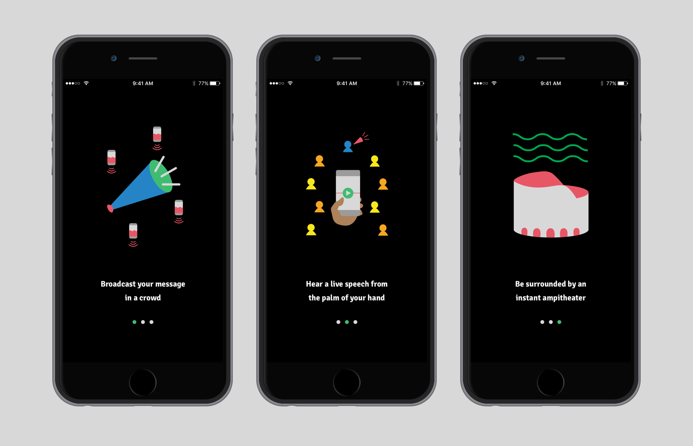
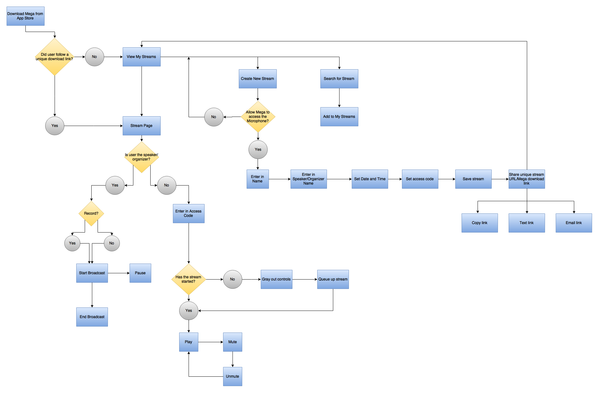

Mega is a mobile app that allows you to broadcast live sound from your phone across multiple smartphone speakers within a physical range. Hosts transmit their voice and sound through a smartphone’s microphone to a server and attendees stream via wifi or data.
In my exploratory survey I asked users about audio streaming habits, satisfaction with smartphone speakers, and if they stream audio from multiple devices. The results showed that most people who listen to audio on their phones are streaming from music services (like Spotify, Pandora) or playing videos from Youtube. Some people complained about the poor audio quality on their phones and short battery life of external bluetooth speakers. Nearly all users agreed that the convenience of phone speakers for playing audio outweigh shortcomings.
In analyzing survey results, I saw that the music streaming space is well accounted for with excellent subscription based apps and a booming market of portable bluetooth speakers. I decided to shift the focus of my app to serve leaders who need to speak to large groups in informal settings.
I created four separate user personas: Rally Organizer, Tour Guide, Yoga Instructor, Classroom Educator.
View Personas View Competitive AnalysisMega, an abbreviation of megaphone, is inspired by a vintage cheerleader’s bullhorn. I drew on the balance of lines and curves and relied on a circular theme when creating the app’s other elements. Mega's look and feel is dependability and accessibility. Color and layout intentionally focus the user on essential elements.
Mega is a lightweight app with a few, very critical user flows: Create a stream, start broadcasting, find and play a stream. I choose to not require account creation, as it creates a barrier to use.
 View user flowsOn the stream page, I included options for hosts to record, share, and edit a stream. I also displayed a countdown to a broadcast, which changes to a timer after a recording begins. Broadcasting and streaming start and stop at the tap of a single prominent button.
View PrototypeI used Lookback to record users testing my first Mega prototype. As I observed users getting stuck on the stream page, it became clear to me that I did not display enough navigation for returning to the main page. I restructured the app in three horizontal sections: Search on the left, stream list in the middle, and individual stream page on the right. Three navigation icons to represent each page. Users drag the icon of the page they wish to access across the screen.
Originally, I used a speaker icon to indicate play, and a square icon to indicate stop. Users did not agree on what icons that indicated play or stop, which led to additional research on audio interfaces. I learned that icons are used in slightly different contexts. Users may think they are turning on the sound or stopping a broadcast, when neither is the programmed action. I replaced the original icons with a triangle for play and two bars for pause. When an attendee presses the pause button, they are not pausing the broadcast but muting the live feed. However, the familiar meaning of pause best serves the button’s function.
While designing the hi-fi mocks, I chose green for streaming screens, and pink for broadcast screens, as a nod to the traditionally red record button. When a stream starts, the thin line in the middle of the screen expands to a wavy animation to indicate volume levels of a host’s voice.
On the main streams page, I opted for a timeline view of upcoming streams, with the most recent stream emphasized at the top of the timeline, and the ability to scroll down to see future streams. Users tap on titles and brief descriptions to open individual stream pages and can start listening if the broadcast has started.
The original mocks were further simplified and tightened up with the use of multi-function buttons. I conducted research on one-button alarm clocks and how to work within the restrictions of minimal interface. I centered the circular play/pause button on the bottom half of the screen, and relegated all secondary action to the top of the screen, giving them a distinct smaller oval shape.
 View Prototype
View Prototype